01 Введение (домен, хостинг, браузеры, редакторы кода)
Презентация online
1. Основные этапы разработки сайта
- Составление технического задания
- Веб-дизайн (UI, UX)
- Клиентская разработка (front-end) HTML, CSS, JavaScript
- Серверная разработка (back-end) Pyton, Java, PHP, NodeJs, SQL
- Продвижение (SEO, директ)
2. Способы создания сайта
- Ручное программирование
- Конструктор
- CMS (Content management system) - система управления контентом
- Фреймворки - программная платформа, определяющая структуру программной системы
3. Домен и хостинг сайта
- хостинг
- домент первого / второго / третьего уровня
4. Архитектура «Клиент-Сервер»
- DNS
- Браузер
- Кеш браузера
- Веб-сервер
- База данных
5. Браузеры
- Google Chrome
- Mozilla Firefox
- Opera
- Safari
- Microsoft Edge
- Internet Explorer
6. Редакторы для веб-разработки
- Sublime Text
- Notepad++
- Atom
- Brackets
- Codepen.io
02 Структура HTML файла. Раздел HEAD. Парные и непарные теги
Структура HTML документа
<!DOCTYPE html>
<html>
<head>
<!-- служебная информация -->
</head>
<body>
<!-- содержимое сайта -->
</body>
</html>
Раздел HEAD (служебная информация)
<head>
<meta charset="utf-8">
<title>Название сайта</title>
<meta name="description" content="Описание сайта">
<meta name="keywords" content="Ключевые фразы через запятую">
<link rel="icon" type="image/png" href="favicon.png">
<link rel="stylesheet" type="text/css" href="css/style.css">
</head>
Раздел BODY (содержимое сайта)
<body>
Привет Мир!
</body>
Парные и непарные теги
Непарный тег, выполняющий действие (задание кодировки)
<meta charset="utf-8">
Парный тег, ограничивающий начало контента и окончание контента (заголовок сайта)
<title>Название сайта</title>
03 Пути к файлам. Относительные и абсолютные
https://yandex.ru/mail.html - абсолютный путь
mail.html - относительный путь (относительно index.html)
C:\Users\User\Desktop\www\mail.html - абсолютный путь
mail.html - относительный путь (относительно index.html)
Подключение файла style.css к index.html
href="style.css" - файлы index.html и style.css находится в одной папке
href="css/style.css" - файл style.css находится в папке "css" (директория вниз)
href="../style.css" - файл style.css находится на директорию выше (директория вверх)
04 Цвета CSS (стандартные, hex, rgb). CSS селектор по имени тега
CSS селектор по имени тега
body {
background: orange; - фон
color: blue; - цвет текста
}
Google Color Picker
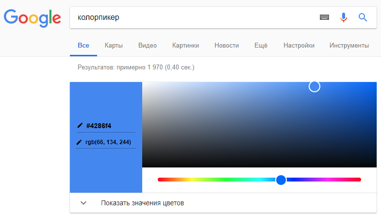
background: orange; - стандартное название
background: #4286f4; - hex
background: rgb(66, 134, 244); - rgb
05 Строчные элементы (span). Работа с текстом и шрифтами
Заголовки (h1-h6)
<h1>Заголовок 1 уровня</h1>
<h2>Заголовок 2 уровня</h2>
<h3>Заголовок 3 уровня</h3>
<h4>Заголовок 4 уровня</h4>
<h5>Заголовок 5 уровня</h5>
<h6>Заголовок 6 уровня</h6>
Строчный элемент (span)
<span>Строчный элемент 1</span>
<span>Строчный элемент 2</span>
Особенности строчных элементов
- элементы обтекают друг друга
- ширина равна ширине контента
- высота равна высоте контента
- применение свойств width и height не дает результата
Перенос строки (br)
Здесь нужно сделать <br> перенос строки
Абзац (p)
<p>Первая строка</p>
<p>Вторая строка</p>
font
p {
font-size: 20px; - размер шрифта
font-style: italic; - начертание шрифта
font-weight: bold; - насыщенность шрифта
}
text
p {
text-align: center | left | right; - горизонтальное выравнивание текста в пределах элемента
text-decoration: none | underline; - оформление текста
text-decoration-color: orange; - оформление текста (цвет линии)
text-decoration-style: solid | double | dotted | dashed | wavy; - оформление текста (стиль линии)
text-indent: 20px; - красная строка
text-transform: uppercase | lowercase; - преобразованием текста элемента в заглавные или прописные символы
}
text-shadow
p {
text-shadow: 3px 4px 5px #000;
}
// 3px - смещение по горизонтали
// 4px - смещени по вертикали
// 5px - размытие
p {
word-spacing: 10px - расстояние между словами
letter-spacing: 4px; - расстояние между буквами
line-height: 1.5; - расстояние между строками
}
Работа со шрифтами
p {
font-family: Verdana; - семейство шрифта
}
Подключение шрифта
@font-face {
font-family: OpenSans; - имя шрифта
src: url(../font/OpenSans.ttf); - путь к файлу со шрифтом
}
Применение шрифта
p {
font-family: OpenSans;
}
- google fonts
- шрифты serif и sans serif
- font-face ninja
06 Блочные элементы (div)
Особенности блочных элементов
- элементы на обтекают друг друга
- ширина равна 100% от ширины родителя
- высота равна высоте контента
- можно применять свойства width и height
Внешний отступ (margin)
div {
margin: 10px; - сверху=справа=снизу=слева=10px
margin: 10px 15px 20px 25px; - сверху=10px, справа=15px, снизу=20px, слева=25px
margin: 10px 20px; - сверху=снизу=10px, справа=слева=20px
margin-top: 10px; - отступ сверху
margin-bottom: 10px; - отступ снизу
margin-left: 10px; - отступ слева
margin-right: 10px; - отступ справа
margin: auto; - центрирование блока по горизонтали
margin: 0 auto; - центрирование блока по горизонтали и задание отступа сверху и снизу=0
}
Внутренний отступ (padding)
div {
padding: 10px; - сверху=справа=снизу=слева=10px
padding: 10px 15px 20px 25px; - сверху=10px, справа=15px, снизу=20px, слева=25px
padding: 10px 20px; - сверху=снизу=10px, справа=слева=20px
padding-top: 10px; - отступ сверху
padding-bottom: 10px; - отступ снизу
padding-left: 10px; - отступ слева
padding-right: 10px; - отступ справа
}
Обнуление margin и padding у body
По умолчанию у body есть отступы
body {
margin: 0;
padding: 0;
}
Ширина (width)
div {
width: 500px; - ширина
max-width: 700px; - максимальная ширина
min-width: 200px; - минимальная ширина
}
Высота (height)
div {
height: 500px; - высота
max-height: 700px; - максимальная высота
min-height: 200px; - минимальная высота
}
Рамка (border, border-radius). Обводка (outline)
div {
border: 2px solid orange; - рамка 2px сплошная оранжевая
border: 2px solid transparent; - рамка 2px сплошная прозрачная
border-top: 2px solid orange; - рамка сверху
border-bottom: 2px solid orange; - рамка снизу
border-left: 2px solid orange; - рамка слева
border-right: 2px solid orange; - рамка справа
border-radius: 10px; - радиус для всех четырёх углов
border-radius: 10px 15px; - радиус верхнего левого и нижнего правого уголков = 10px, верхнего правого и нижнего левого углов = 15px;
border-radius: 10px 15px 20px 25px; - по очереди устанавливает радиус для верхнего левого, верхнего правого, нижнего правого и нижнего левого углов
outline: 2px solid orange; - обводка 2px сплошная оранжевая
}
Тень у блоков
div {
box-shadow: 1px 2px 3px 4px blue;
box-shadow: inset 1px 2px 3px 4px blue;
}
// 1px - смещение по горизонтали
// 2px - смещени по вертикали
// 3px - размытие
// 4px - толщина
Задание нескольких теней
div {
box-shadow:
0 0 0 5px red,
0 0 0 10px green,
0 0 0 15px blue;
}
CSS Overflow
Свойство overflow управляет отображением содержания блочного элемента, если оно целиком не помещается и выходит за область заданных размеров.
div {
overflow: auto; - добавление полос прокрутки, если контент не помешается в блок
overflow: hidden; - обрезка контента, если контент не помешается в блок
}
07 Единицы измерения. Относительные и абсолютные (px, %, vh, vw, em, rem)
px - абсолютная единица измерения
% - относительная, рассчитывается относительно родителя
vw - viewport width, относительная, рассчитывается относительно viewport
vh - viewport height, относительная, рассчитывается относительно viewport
em - относительная, рассчитывается относительно родителя (берет значение font-size)
rem - root em, относительная, рассчитывается относительно html (берет значение font-size)
Пример #1. Задание у блока 100% ширины и высоты (в процентах)
html, body {
height: 100%;
}
div {
width: 100%;
height: 100%;
}
Пример #2. Задание у блока 100% ширины и высоты (в vw и vh)
div {
width: 100vw;
height: 100vh;
}
Единица измерения em
<p>Текст абзаца</p>
<div class="container">
<div class="item1">Текст для item1</div>
<div class="item2">Текст для item2</div>
</div>
body {
font-size: 20px;
}
.container {
font-size: 2em;
}
.item1 {
font-size: 2em;
}
.item2 {
font-size: 1em;
}
Единица измерения rem
rem берется от html
<p>Текст абзаца</p>
<div class="container">
<div class="item1">Текст для item1</div>
<div class="item2">Текст для item2</div>
</div>
html, body {
font-size: 20px;
}
.container {
font-size: 2rem;
}
.item1 {
font-size: 2rem;
}
.item2 {
font-size: 1rem;
}
08 CSS селекторы (class, id, teg)
div - по названию тега
.class - по названию класса
#id - по названию id
div p - каскад
header, p - применение стилей к нескольким элементам
* - все элементы
09 Организация структуры проекта. Теги HTML5 для разметки документа
Структура проекта
index.html - главный файл
favicon.png - иконка для сайта
robots.txt - файл для поисковых роботов
sitemap.xml - карта сайта
css - папка для стилей
fonts - папка для шрифтов
img - папка для изображений
js - папка для javascript скриптов
libs - папка для javascript библиотек
php - папка для php скриптов
sass - папка для sass файлов
Стилистика написания кода
- выравнивание
- именование файлов и классов (английский язык, не транслит, слитно)
- именование классов: item-element, item_element, itemElement
- секции на сайте (content, container, wrapper, item, title, description)
- сервисы для форматирования кода
https://www.10bestdesign.com/dirtymarkup/
Пример правильного выравнивания кода

Sublime Text (комбинации клавиш)
Tab - сдвинуть строки вправо
Shift+Tab - сдвинуть строки влево
Ctrl+Shift+D - продублировать строку
Ctrl+F - поиск
F3 - продолжить поиск на странице
Ctrl+Shift+F - поиск с заменой
Ctrl + / - комментарий
Комментарии
Комментарий на HTML
<!-- здесь текст комментария -->
Комментарий на CSS
/* здесь текст комментария */
Теги HTML5 для разметки документа

<header></header>
Элемент <header> задаёт «шапку» сайта или раздела, в которой обычно располагается заголовок.
<nav>ссылки</nav>
Элемент <nav> задаёт навигацию по сайту. Если на странице несколько блоков ссылок, то в
<nav> обычно помещают приоритетные ссылки. Также допустимо использовать несколько <nav> в
документе. Запрещается вкладывать <nav> внутрь <address>
<main></main>
Элемент <main> предназначен для основного содержимого документа. На странице может быть
только один <main> и он не должен располагаться внутри элементов <article>,
<aside>, <footer>, <header> или <nav>.
<section></section>
Задаёт раздел документа, может применяться для блока новостей, контактной информации,
глав текста, вкладок в диалоговом окне и др. Раздел обычно содержит заголовок.
<footer></footer>
Тег <footer> задаёт «подвал» сайта или раздела, в нём может располагаться имя автора,
дата документа, контактная и правовая информация.
<article></article>
Задаёт содержание сайта вроде новости, статьи, записи блога, форума и др.
<aside></aside>
Определяет блок сбоку от контента для размещения рубрик, ссылок на архив, меток и другой
информации. Такой блок, как правило, называется «сайдбар» или «боковая панель».
<figure></figure>
Используется для группирования любых элементов, например, изображений и подписей к ним.
<figure> не должен быть связан непосредственно с основным содержимым документа и при
его перемещении в другое место смысл текста не должен меняться. Обычно применяется для
иллюстраций, фрагментов кода, схем, графиков, диаграмм и др.
10 Изображения. Фоновые изображения
Виды компьютерной графики
- Растровая
- Векторная
- Трехмерная
Форматы изображений
.jpg - растровая графика без прозрачности (Adobe Photoshop)
.png - растровая графика с прозрачностью (Adobe Photoshop)
.svg - векторная графика (Adobe Illustrator)
Изображения (img)
<img src="img/picture.jpg" alt="Альтернативный текст" title="Подсказка">
Атрибуты (img)
src - путь к графическому файлу
alt - альтернативный текст для изображения
title - содержимое элемента в виде всплывающей подсказки
Стилизация на CSS
При одновременном задании width и height возникает искажение пропорций.
Поэтому следует задавать только width или только height
Без искажения пропорций применяется свойство object-fit со значениями contain или cover
object-fit: cover; - элемент увеличивается или уменьшается, чтобы целиком заполнить заданную область с сохранением пропорций
object-fit: contain; - элемент масштабируется, чтобы целиком уместиться в заданные размеры с соблюдением пропорций
Свойство не работает в Internet Explorer!
Фоновые изображения (background-image)
div {
background-image: url(img.png); - путь к изображению
background-repeat: no-repeat; - повторение изображения
background-position: center center; - позиционирование изображения (задние в px и %)
background-size: contain; - изображение полностью помещается в блок
background-size: cover; - изображение заполняет весь блок
background-size: 50%; - задание в %
background-color: #3b3b3b; - цвет фона
background-attachment: fixed; - будет ли прокручиваться фоновое изображение
background: url(img.png) no-repeat center 50%; - сокращенная запись
}
Оптимизация изображений
https://tinypng.com/
Варианты применения
img - логотипы, картинки товаров, уникальные изображения, которые должны индексироваться поисковиками
background-image - фоновые изображения
11 Прозрачность элементов в CSS (opacity, rgba)
div {
opacity: 0.4; - задание прозрачности всему блоку и дочерним элементам
background: rgba(66,134,244,0.4); - задание прозрачности только фону блока через альфа-канал
}
rgba()
r - red
g - green
b - blue
a - alpha channel
12 Псевдоклассы (first-child, last-child, nth-child)
<div class="container">
<div class="item">item-1</div>
<div class="item">item-2</div>
<div class="item">item-3</div>
<div class="item">item-4</div>
</div>
item:first-child - первый элемент (элементы должны быть в wrapper)
item:last-child - последний элемент (элементы должны быть в wrapper)
item:nth-child(2) - второй элемент
item:nth-child(2n) - каждый второй элемент
item:nth-child(even) - каждый четный элемент
item:nth-child(odd) - каждый нечетный элемент
13 Табличные элементы (table)
<table> – контейнер
<tr> - table row (строка)
<td> - table data (ячейка)
<th> - table header (ячейка заголовка)
<td rowspan="2"> – объединение строк
<td colspan="2"> – объединение столбцов
Пример таблицы
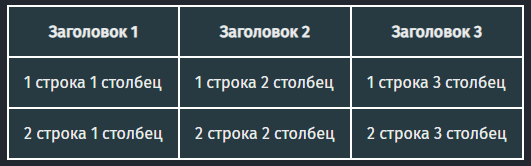
<table>
<tr>
<th>Заголовок 1</th>
<th>Заголовок 2</th>
<th>Заголовок 3</th>
</tr>
<tr>
<td>1 строка 1 столбец</td>
<td>1 строка 2 столбец</td>
<td>1 строка 3 столбец</td>
</tr>
<tr>
<td>2 строка 1 столбец</td>
<td>2 строка 2 столбец</td>
<td>2 строка 3 столбец</td>
</tr>
</table>
table {
border: 2px solid orange;
border-collapse: collapse;
}
td, th {
border: 2px solid orange;
padding: 5px 10px;
}
Объединение строк (rowspan)
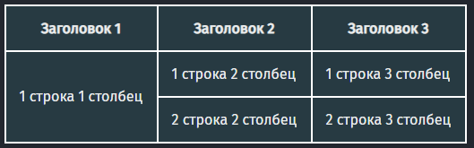
<table>
<tr>
<th>Заголовок 1</th>
<th>Заголовок 2</th>
<th>Заголовок 3</th>
</tr>
<tr>
<td rowspan="2">1 строка 1 столбец</td>
<td>1 строка 2 столбец</td>
<td>1 строка 3 столбец</td>
</tr>
<tr>
<!--<td>2 строка 1 столбец</td>-->
<td>2 строка 2 столбец</td>
<td>2 строка 3 столбец</td>
</tr>
</table>
Объединение столбцов (colspan)
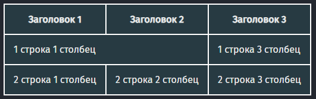
<table>
<tr>
<th>Заголовок 1</th>
<th>Заголовок 2</th>
<th>Заголовок 3</th>
</tr>
<tr>
<td colspan="2">1 строка 1 столбец</td>
<!--<td>1 строка 2 столбец</td>-->
<td>1 строка 3 столбец</td>
</tr>
<tr>
<td>2 строка 1 столбец</td>
<td>2 строка 2 столбец</td>
<td>2 строка 3 столбец</td>
</tr>
</table>
Стилизация таблицы
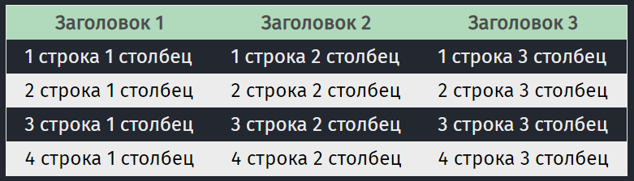
<table>
<tr>
<th>Заголовок 1</th>
<th>Заголовок 2</th>
<th>Заголовок 3</th>
</tr>
<tr>
<td>1 строка 1 столбец</td>
<td>1 строка 2 столбец</td>
<td>1 строка 3 столбец</td>
</tr>
<tr>
<td>2 строка 1 столбец</td>
<td>2 строка 2 столбец</td>
<td>2 строка 3 столбец</td>
</tr>
<tr>
<td>3 строка 1 столбец</td>
<td>3 строка 2 столбец</td>
<td>3 строка 3 столбец</td>
</tr>
<tr>
<td>4 строка 1 столбец</td>
<td>4 строка 2 столбец</td>
<td>4 строка 3 столбец</td>
</tr>
</table>
table {
border: 1px solid #ededed;
border-collapse: collapse;
}
td, th {
padding: 5px 15px;
}
th {
background: #b1dbbb;
color: #4c4c4c;
}
tr:nth-child(odd) {
background: #ededed;
color: black;
}
14 CSS Display (block, inline, table, none)
Основные элементы
div {
display: block; - блок
display: inline; - строка
display: inline-block; - блок-строка
display: table; - блочная таблица
display: table-cell; - ячейка таблицы
display: none; - нет
display: flex; - flexbox элемент
display: grid; - grid элемент
}

15 Псевдоэлементы (before, after)
Псевдоэлемент before - добавляет content перед контентом блока
Псевдоэлемент after - добавляет content после контента блока
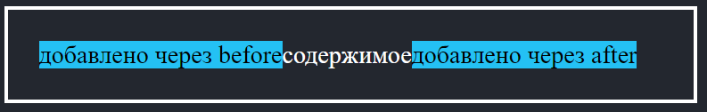
<div>содержимое</div>
div {
padding: 20px;
width: 400px;
}
div::before {
content: "добавлено через before";
background: white;
}
div::after {
content: "добавлено через after";
background: white;
}
16 Float. Обтекание блоков. Clearfix. Box-sizing. Calc()
Обтекание (float)
float: left; - выравнивает элемент по левому краю, все остальные элементы обтекают его по правой стороне
float: right; - выравнивает элемент по правому краю, все остальные элементы обтекают его по левой стороне
float: none; - обтекание элемента не задается
clear: left; - отключить обтекание слева
clear: right; - отключить обтекание справа
clear: both; - отключить обтекание справа и слева
Пример использования float и отключения обтекания (clearfix)
<div class="container">
<div class="item">item1</div>
<div class="item">item2</div>
</div>
.container {
border: 2px solid blue;
}
.container:after{
content: ""; /*содержимое не нужно*/
display: block; /*для отключения обтекания необходим блочный элемент*/
clear: both; /*отключение обтекание справа и слева*/
}
.item {
width: 100px;
height: 100px;
background: orange;
padding: 20px;
margin: 5px;
}
.item:first-child {
float: left; /*применение обтекания слева*/
}
.item:last-child {
float: right; /*применение обтекания справа*/
}
Изменение алгоритма расчёта ширины и высоты элемента (box-sizing)
box-sizing: content-box; - свойства width и height не включают в себя значения margin, padding и border
box-sizing: border-box; - свойства width и height включают в себя значения padding и border, но не margin
Вычисление значения (calc)
Выражение представляет собой комбинацию значений размеров и следующих знаков математических действий.
+ — сложение (width: calc(20px + 20px));
- — вычитание (padding: calc(10% - 10px););
* — умножение (height: calc(20%*2);)
/ — деление. На ноль делить запрещено (width: calc(100%/3);).
div {
width: calc(100% - 200px);
}
17 CSS Inline-block
display: inline-block
<div class="item">item-1</div>
<div class="item">item-2</div>
.item {
width: 200px;
height: 200px;
background: orange;
display: inline-block;
}
Выравнивание элементов по вертикали (vertical-align)
vertical-align: middle; - по центру
vertical-align: top; - по верхнему краю
vertical-align: bottom; - по нижнему краю
<div class="item">item-1</div>
<div class="item">item-2</div>
.item {
width: 200px;
background: orange;
display: inline-block;
}
.item:first-child {
height: 200px;
vertical-align: middle;
}
.item:last-child {
height: 100px;
vertical-align: middle;
}
Выравнивание элементов по горизонтали
<div class="container">
<div class="item">item-1</div>
<div class="item">item-2</div>
</div>
.container {
text-align: center;
}
.item {
width: 200px;
height: 200px;
background: orange;
display: inline-block;
}
18 CSS Flexbox
19 CSS Grid
20 Позиционирование блочных элементов (position)
Виды позиционирования
position: static; - статичное (стандартное позиционирование)
position: relative; - относительное (положение устанавливается относительно его исходного места)
position: absolute; - абсолютное (отсчёт координат ведётся от края окна браузера, если у родителя не установлено position: relative)
position: fixed; - фиксированное (привязывается к указанной свойствами left, top, right и bottom точке на экране)
position: sticky; - сочетание относительного и фиксированного позиционирования
Свойства left, right, top, bottom
Применяются для всех видов позиционирования кроме static
div {
position: relative;
top: 100px;
left: 70px;
}
Парядок расположения элементоы (z-index)
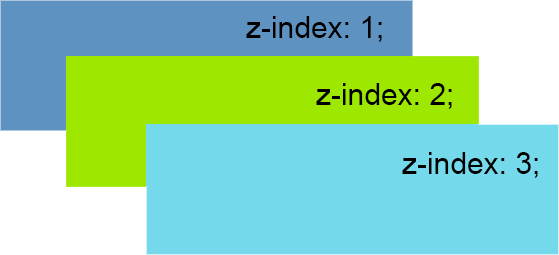
div {
z-index: 1;
}
21 Адаптивная верстка. Мобильная версия сайта
HTML
<meta name="viewport" content="width=device-width, initial-scale=1">
Стандартные разрешения экрана
320px - мобильные устройства
480px - мобильные устройства
640px - мобильные устройства
768px - мобильные устройства
1024px - планшеты
CSS Media queries
Если мы верстам: pc -> tablet -> mobile 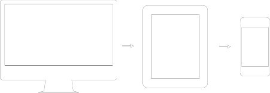
@media screen and (max-width: 1200px) {
/* если ширина экрана стала меньше 1200px, применяются свойства, написанные здесь */
}
Если мы верстам: mobile -> tablet -> pc (концепция Mobile First)
@media screen and (min-width: 700px) {
/* если ширина экрана стала больше 700px, применяются свойства, написанные здесь */
}
22 Регистрация домена и хостинга на Timeweb
23 Chrome Developer Tools (elements). Инструменты разработчика
F12
Fn+F12 для ноутбуков
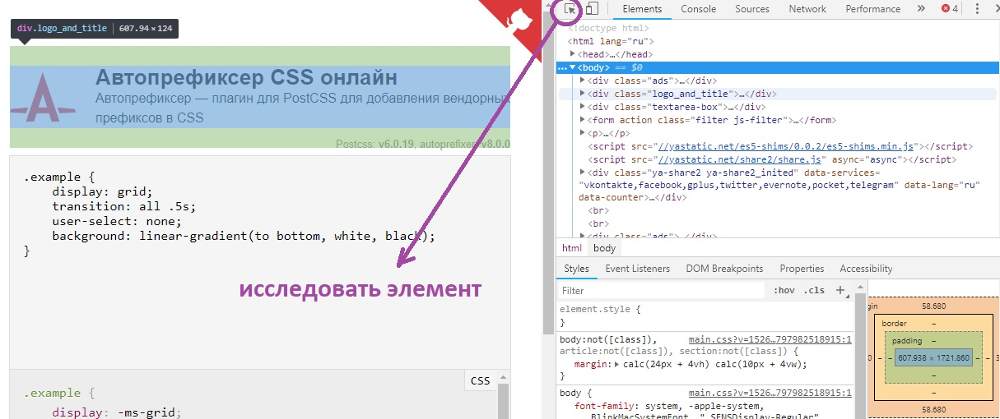
24 Списки: маркированные и нумерованные (ul, ol)
Маркированный список
<ul>
<li>item1</li>
<li>item2</li>
<li>item3</li>
</ul>
Нумерованный список
<ol>
<li>item1</li>
<li>item2</li>
<li>item3</li>
</ol>
Настройка маркеров
list-style: list-style-type list-style-image list-style-position;
list-style-type: none | circle ... - изменяет вид маркера
list-style-image: none | url('путь к файлу') - устанавливает изображение
list-style-position: inside | outside - размешение относительно текста
25 Ссылки. Виды ссылок
<a href="page.html">Ссылка на другую страницу</a>
<a href="page.html" target="_blank">Открытие ссылки в новой вкладке</a>
<a href="https://ya.ru/">Ссылка на другой сайт</a>
<a href="#about">Ссылка на место в текущей странице</a>
<a href="tel:7777777">777-777</a>
<a href="mailto:my@mail.com">my@mail.com</a>
<a href="test.rar" download>Скачать файл</a>
26 Создание адаптивного меню на CSS
27 Псевдоклассы (hover, not, focus, active, visited, link)
a:hover - наведение на элемент
a:not(:hover) - увод с элемента
a:active - активный элемент
a:focus - элемент в фокусе
a:visited - посещеннае ссылки
a:link - не посещенные ссылки
a:hover {
background: orange;
transition: 0.4s;
}
a:not(:hover) {
transition: 0.4s;
}
28 Переходы в CSS (transition)
transition (анимированный переход)
transition: all 0s ease 0s;
1. transition-property - какие свойства анимируются
2. transition-duration - длина анимации
3. transition-timing-function - как вычисляются промежуточные состояния
4. transition-delay - время ожидания перед запуском эффекта
transition: all 0.7s ease-in 0s;
div {
background: orange;
transition: all 0.7s ease-in 0s;
}
div:hover {
background: blue;
}
29 Поля ввода и кнопки (input, textarea, select, button)
Текстовое поле (input=text)
<input type="text" name="text">
textarea {
resize: none;
}
Многострочной текстовое поле(textarea)
<textarea>Текст</textarea>
Выпадающий список (select)
<select>
<option selected="">Пункт 1</option>
<option>Пункт 2</option>
<option>Пункт 3</option>
</select>
Связанные переключатели (radio)
<input type="radio" name="radio">
<input type="radio" name="radio">
<input type="radio" name="radio">
Галочка (checkbox)
<input type="checkbox" name="checkbox">
Lable для checkbox
<input type="checkbox" id="checkbox">
<label for="checkbox">Нажми и выберется checkbox</label>
<label class="checkbox">
<input type="checkbox">
</label>
Прикрепление файла
<input type="file">
Кнопка
<button>Кнопка</button>
Особенности
Наследование свойств inherit (размер шрифта, стиль шрифта)
Атрибуты
placeholder - подсказка для input
checked - нажатый radio или checkbox
selected - выбранный option в select
autofocus - фокус по умолчанию
disabled - неактивное
readonly - только чтение
Форма (get, post)
<form action="script.php" method="get">
<input type="text" name="name" required="">
<textarea name="message"></textarea>
<input type="submit">
</form>
http://test1.ru/script.php?name=myname&message=my+message
30 CSS селекторы (attr)
input[type="text"] - все input у которых type="text"
input[name="text"] - все input у которых name="text"
input[class="text"] - все input у которых class="text"
31 Трансформация в CSS (transform). 2D преобразования
transform
1. СДВИГ
translate(50px, 50px); - сдвигает элемент на заданное значение по горизонтали и вертикали (положительное значение сдвигает вправо, отрицательное влево)
translateX(50px); - сдвигает элемент по горизонтали на указанное значение
translateY(50px); - сдвигает элемент по вертикали на указанное значение
translateZ(50px); - сдвигает элемент по оси Z на указанное значение
- один параметр translate(): перемещает элемент вдоль оси х
- два параметра translate(): первое значение для оси х, второе для оси у
2. ПОВОРОТ
rotate(15deg); - поворот
rotateX(15deg); - поворот по оси X
rotateY(15deg); - поворот по оси Y
rotateZ(15deg); - поворот по оси Z
3. МАСШТАБИРОВАНИЕ
scale(1.2); - масштабирует элемент по горизонтали и вертикали
scaleX(1.2); - масштабирует элемент по горизонтали
caleY(1.2); - масштабирует элемент по вертикали
scaleZ(1.2); - масштабирует элемент по оси Z
- один параметр scale(): изменение размеров элемента одинаково по высоте и ширине
- два параметра scale(): первое значение изменяет размер элемента по горизонтали, второе по вертикали
4. НАКЛОН (ИСКАЖЕНИЕ)
skew(15deg);
skewX(15deg); - наклоняет элемент на заданный угол по вертикали
skewY(15deg); - наклоняет элемент на заданный угол по горизонтали
- один параметр: элемент искажается по горизонтали;
- два параметра: первое значение искажает элемент по горизонтали, второе по вертикали.
Особенности:
1. Не прерывает поток (не влияют на другие элементы)
2. Трансформации можно записывать несколько через пробел
div {
transform: translate(50px, 50px);
}
32 Анимация в CSS (animation)
animation
animation: none 0s ease 0s 1 normal none running;
1. animation-name - название анимации
2. animation-duration - как долго длится анимация
3. animation-timing-function - как вычисляются промежуточные состояния
4. animation-delay - анимация начинается спустя некоторое время
5. animation-iteration-count - сколько раз должна выполняться анимация
6. animation-direction - должно движение идти в обратную сторону или нет
7. animation-fill-mode - какие стили применяются до начала анимации и после её завершения
8. animation-play-state - проигрывать анимацию или поставить её на паузу

@keyframes move{
0% { }
25% { transform: translate(300px, 0px); background: red; }
50% { transform: translate(300px, 300px); background: gray; }
75% { transform: translate(0px, 300px); background: green; }
100% { }
}
div {
animation-name: move;
animation-duration: 5s;
animation-timing-function: linear;
animation-delay: 0s;
animation-iteration-count: 1;
animation-direction: normal;
animation-fill-mode: none;
animation-play-state: running;
}
div {
border: 1px solid #000;
width: 200px;
height: 200px;
background: orange;
animation: move 5s infinite;
}
33 CSS селекторы (>, +, ~)
ul li > span - не все span, а только дочерние span
ul li + li - все последующие элементы li
.class1 ~ div - все div элементы после class1
.class1 ~ * - все элементы после class1
<div class="container">
<div>item</div>
<div>item</div>
<div>
item
<div>inside item</div>
<div>inside item</div>
</div>
</div>
<div>outside</div>
<div>outside</div>
<p>outside</p>
body {
font-size: 35px;
}
.container {
background: silver;
}
.container > div {
border: 4px solid blue;
margin: 10px;
padding: 10px;
}
34 Adobe Photoshop для верстальщика
Работа с PSD-макетом
- Панель со слоями (видимость слоев, текстовые слои)
- Текстовые слои (установка шрифтов)
- Копировать CSS
- Панель инструментов (Рамка, Пипетка, Заливка, Текст, Линейка)
- Файл -> Экспортировать -> Сохранить для Web (jpg, png)
- Перевод единицы измерения px (Редактирование -> Настройки -> Единицы измерения и линейки)
PSD
Waxom Hemepage
Minimal-Template
Creative Digital Agencies
Дизайн
templatemonster.com
themeforest.net
35 Яндекс Карты и Google Maps для сайта
- статичные и динамичные карты
- фиксированный размер
- размер в процентах
- scroll=false
<script
type="text/javascript"
charset="utf-8"
async
src="
https://api-maps.yandex.ru/services/constructor/1.0/js/?um=constructor...&
width=500&
height=400&
lang=ru_RU&
scroll=false
"
></script>
36 Яндекс Метрика
37 Редактор кода CodePen. Плагин Emmet
38 CSS фильтры (filter)
Filter (не работает в IE)
filter: blur(5px); - размытие (напрямую к body применить нельзя)
filter: brightness(150%); - яркость, 100% по умолчанию
filter: contrast(150%); - контрастность, 100% по умолчанию
filter: grayscale(70%); - черно-белое, 0% по умолчанию
filter: hue-rotate(90deg); - поворот оттенка, определяет угол, 0deg по умолчанию
filter: invert(100%); - инвертирование
filter: opacity(50%); - прозрачность
filter: saturate(150%); - изменение насыщенности
filter: sepia(100%); - сепия
filter: drop-shadow(10px 10px 3px rgba(100,0,0,0.5)); - добавляет тень к изображениям, учитывая прозрачные участки
можно применять несколько фильтров
первый фильтр применяется к исходному изображению, а остальные к предыдущему
filter: contrast(150%) sepia(100%);
39 Видео и аудио. Загрузка видео с YouTube
<video src="video/video.mp4" controls="controls" width="100%" height="100%" poster="poster.jpg"></video>
<audio src="audio/audio.mp3" controls>
Autoplay видео с youtube
https://www.youtube.com/embed/w4C-qfaEt7Y?autoplay=1
- применение object-fit
- применение filter
Background Video (Codepen)
40 Виджеты ВКонтакте
41 CSS правило @import
@import "style.css";
- подключается в начале файла стилей
42 Переменные в CSS (область видимости)
- уровень root и область видимости
- резервное значение
:root {
--color:green;
}
body {
background: var(--color);
}
body {
background: var(--color,red); /* резервное значение */
}